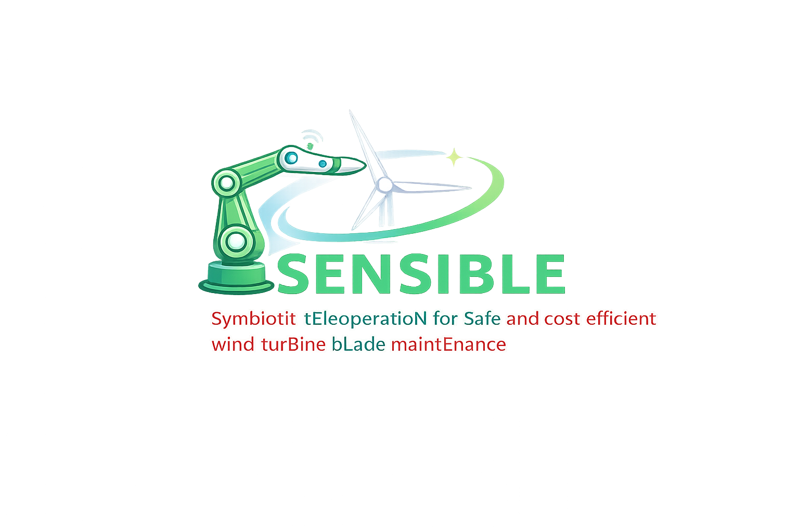

Symbiotic tEleoperatioN for Safe and cost-efficient wInd turBine bLade maintEnance
Demonstration of the first integration milestone which shows an operator can use a mobile manipulator to teleoperate another remote robot performing the drain hole cleaning task on a blade based on visual feedback through a VR headset.
Demonstration of a wearable haptic device which was used to receive cutaneous feedback cues on the fingertips to guide the operator how to regulate the stiffness of the remote robot through the hand movement. At the end of the demo, a VR-based training system was demonstrated to train a novice operator how to use the teleoperation system with high-fidelity simulations in a lab environment at SDU.
Demonstration of a robotic teleoperation system prototype which shows an operator can use a grounded manipulator to teleoperate another remote manipulator performing the lightning receptor hole cleaning task on a blade with a finger-worn haptic device in a lab environment at SDU.